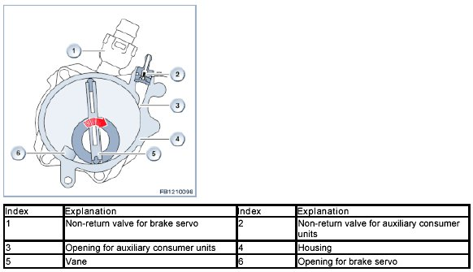
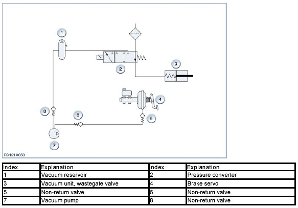
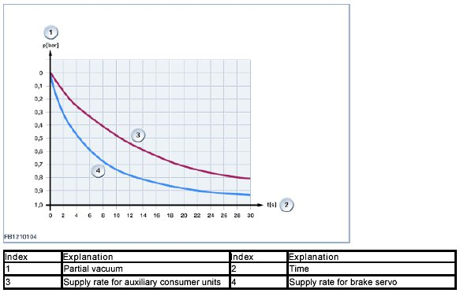

Vacuum Supply
Vacuum Supply
Vacuum supply
The engine has a vacuum pump to generate the necessary partial vacuum for the brake servo and auxiliary consumer units (for example wastegate valve or model-specific exhaust flap. So that an adequate partial vacuum is available at any time, a vacuum reservoir is used.
Brief component description
The following components for vacuum supply are described:
- Vacuum pump.
Vacuum pump
The vacuum pump is similar to that of the N63 engine. It is designed as 2-stage and accordingly has 2 connections:
- First stage for the brake servo
- Second stage for the auxiliary consumer units.

System overview
The following illustration shows the system overview without the model-specific exhaust flap.

System functions
The following system functions are described:
- Build-up of partial vacuum.
Build-up of partial vacuum
For the first stage, the largest portion of the spatial enlargement (discharging) is used, thus building up the partial vacuum quickly for the brake servo. Only in the last section is the opening released for the auxiliary consumer units, i.e. the second stage is activated. Building up the partial vacuum for the auxiliary consumer units takes longer, as shown in the following diagram.

We can assume no liability for printing errors or inaccuracies in this document and reserve the right to introduce technical modifications at any time.